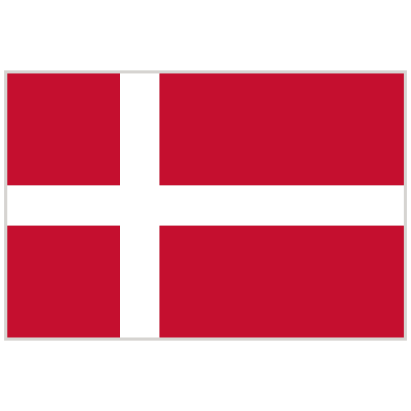

La selección de Inglaterra ha sido una presencia constante en la
Eurocopa, con participaciones destacadas en 1968, 1996, y 2020. Su
mejor desempeño fue en 2020, cuando llegaron a la final pero
perdieron ante Italia en penales. Inglaterra también fue
semifinalista en 1996, cuando fue anfitriona del torneo. Con una
mezcla de tradición y talento joven, Inglaterra sigue aspirando a su
primer título europeo en futuras ediciones.
Serbia
La selección de Serbia, heredera de Yugoslavia, ha tenido una
historia compleja en la Eurocopa. Yugoslavia fue subcampeona en 1960
y 1968, y semifinalista en 1976. Como Serbia, el equipo ha luchado
por dejar su huella en las ediciones recientes, con participaciones
notables pero sin avanzar más allá de la fase de grupos. Serbia
continúa trabajando para recuperar su antiguo prestigio en el fútbol
europeo y lograr mayores éxitos en futuras competiciones.

Dinamarca
La selección de Dinamarca es conocida por su sorprendente victoria
en la Eurocopa de 1992, donde ganó el título contra todo pronóstico
al derrotar a Alemania 2-0 en la final. Además, Dinamarca ha sido un
competidor regular en la Eurocopa, con participaciones destacadas en
1984 y 2004, alcanzando las semifinales en 1984. Con una combinación
de talento y espíritu combativo, Dinamarca sigue siendo un equipo
formidable en el panorama del fútbol europeo.
Eslovenia
La selección de Eslovenia ha participado en la Eurocopa una vez, en
la edición del año 2000. Durante este torneo, alcanzaron la fase de
grupos, mostrando un rendimiento competitivo. Desde entonces,
Eslovenia ha trabajado para regresar a la competición europea, con
la esperanza de mejorar sus logros y dejar una marca más
significativa en futuros torneos. Con un enfoque en el desarrollo y
el talento joven, Eslovenia aspira a consolidarse como una fuerza en
el fútbol europeo.